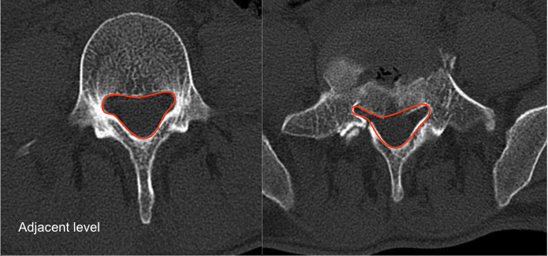

Adapted from: Niknejad M, Burst fracture. Case study, Radiopaedia.org (Accessed on 05 Jan 2026) https://doi.org/10.53347/rID-93541
1) Description of Measurement
Canal Compromise Percentage estimates the proportion of the normal spinal canal that is occupied by retropulsed bony fragments following burst fracture. It is calculated by comparing the cross-sectional area (CSA) of the normal canal at an adjacent level with the residual canal area at the injured level.
This measurement correlates with neurological risk, severity of canal stenosis, and is often used when determining the need for decompression.
2) Instructions to Measure
Imaging Requirements
Step-by-Step
Select Reference Level (Normal Canal)
Select Injured Level
Calculate Canal Compromise %
Record
3) Normal vs. Pathologic Ranges
Clinical correlation with the neurologic exam is mandatory.
4) Important References
Milavec H, Gasser VT, Ruder TD, et al. Supplementary value and diagnostic performance of computed tomography scout view in the detection of thoracolumbar spine injuries. Emerg Radiol. 2024 Feb;31(1):63-71. doi: 10.1007/s10140-023-02196-9.
Denis F. The three column spine and its significance in the classification of acute thoracolumbar spinal injuries. Spine (Phila Pa 1976). 1983 Nov-Dec;8(8):817-31. doi: 10.1097/00007632-198311000-00003.
Meves R, Avanzi O. Correlation among canal compromise, neurologic deficit, and injury severity in thoracolumbar burst fractures. Spine (Phila Pa 1976). 2006 Aug 15;31(18):2137-41. doi: 10.1097/01.brs.0000231730.34754.9e.
Yuan L, Yang S, Luo Y, et al. Surgical consideration for thoracolumbar burst fractures with spinal canal compromise without neurological deficit. J Orthop Translat. 2019 Dec 30;21:8-12. doi: 10.1016/j.jot.2019.12.003.
5) Other info....
CT is superior to radiographs for canal compromise assessment.
MRI may be added to assess neural compression, ligamentous injury, and cord/cauda equina edema.
Retropulsed fragment size does not always correlate with neurologic deficit; morphology and dynamic factors also matter.
Measurement should be performed at the maximally compromised axial slice, not mid-vertebral level.